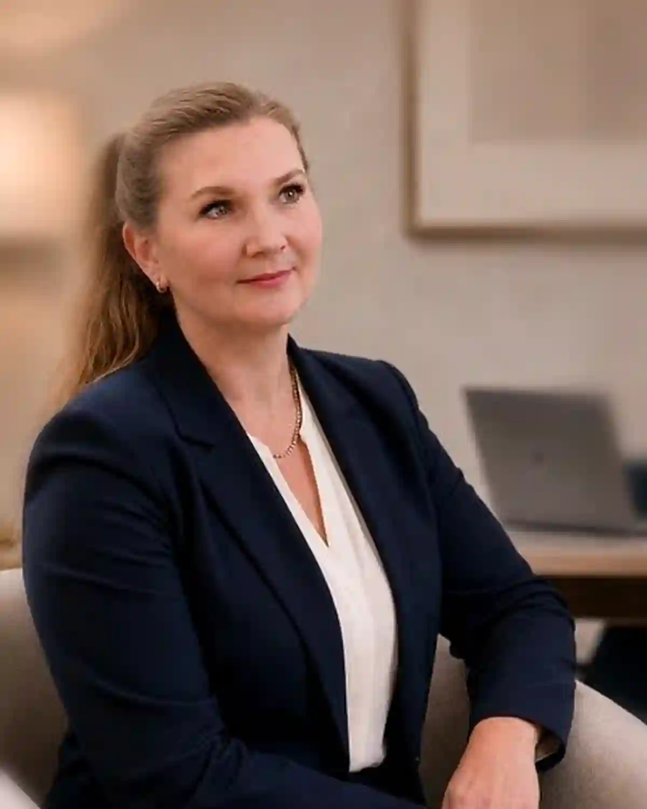

Сначала контекст
Мы уточняем тип бизнеса, период, основной вопрос и срок до выбора пути.
Financial Stream LLC — компания из Federal Way, Washington, которая помогает малому бизнесу, сервисным компаниям и частным клиентам. Мы работаем удалённо по всей территории США на английском и русском языках и начинаем с реальной ситуации клиента, а не с универсального шаблона.

Бухгалтерский учёт, подготовка налоговых деклараций, payroll-отчётность, Sales Tax, регистрация бизнеса и вопросы по документам часто связаны между собой. Financial Stream помогает увидеть эти связи до начала работы.
Для малого и сервисного бизнеса это означает более понятные записи, лучше подготовленные документы и практичный порядок выполнения регулярных обязательств. Для частных клиентов — структурированный способ разобраться с налоговыми и документальными задачами без лишней путаницы.
Доверие строится на точном контексте, порядке в документах и понятных ожиданиях.
Работа Financial Stream строится вокруг порядка в документах, понятной коммуникации и практических следующих шагов. Сначала важно разобраться в реальной ситуации клиента, а затем определить, что именно необходимо сделать дальше.
Мы уточняем тип бизнеса, период, основной вопрос и срок до выбора пути.
Учёт, отчёты, уведомления, прошлые подачи и подтверждающие документы определяют следующий шаг.
Клиент должен понимать, что уже известно, чего не хватает и что будет дальше.
Тип бизнеса, период, основной вопрос и актуальные сроки.
Учёт, выписки, уведомления, подачи, payroll-записи и доступы.
Одна услуга, несколько связанных услуг или проверка документов перед решением.
Необходимая информация, вероятный объём и практический порядок работы.
Текущий учёт, cleanup, catch-up, сверки и подготовленные к отчётности записи.
Подготовка деклараций для бизнеса и частных клиентов на основе доступных документов.
Данные о продажах, отчётные периоды, подтверждения, уведомления и контекст Washington DOR.
Payroll-записи, квартальные документы, сотрудники и соответствующая информация L&I.
Документы по регистрации, EIN, контекст лицензирования и первая финансовая структура.
Отчёты, уведомления, подачи, финансовые документы и уточнение практических следующих шагов.
Регулярный учёт, отчётность, payroll, налоги и задачи по документам.
Практичная организация для компаний, работающих через встречи, проекты, труд или услуги клиентам.
Подготовка налоговых деклараций, подачи, уведомления и вопросы по финансовым документам.
Начните со структурированного обращения. Оно помогает определить ситуацию, сроки, доступные документы и вопрос, который необходимо решить.
Опишите контекст бизнеса или личной задачи, соответствующий период, доступные документы и то, что сейчас остаётся непонятным. Financial Stream сможет определить практический следующий шаг.